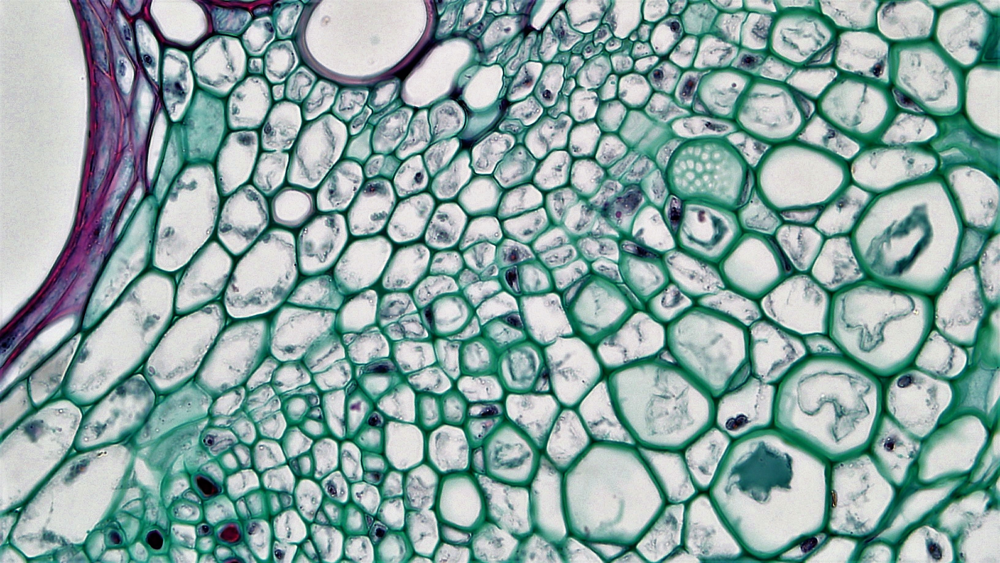
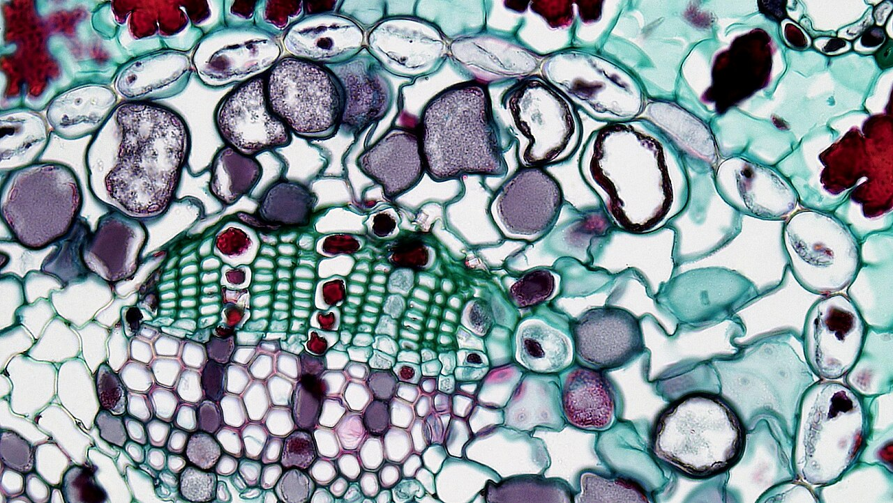
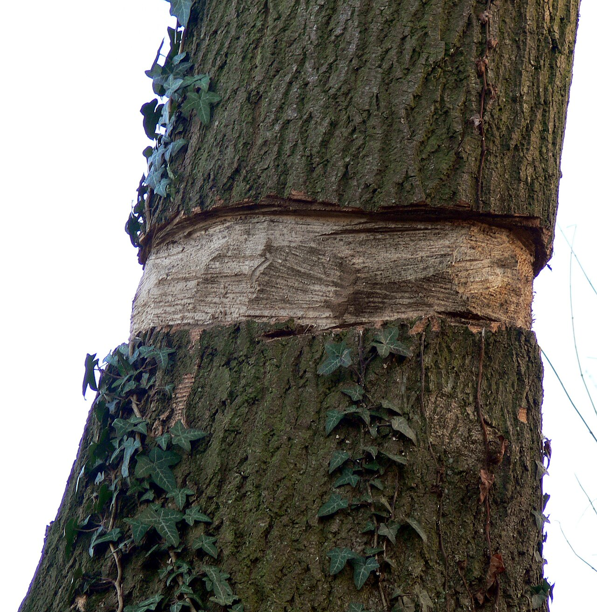
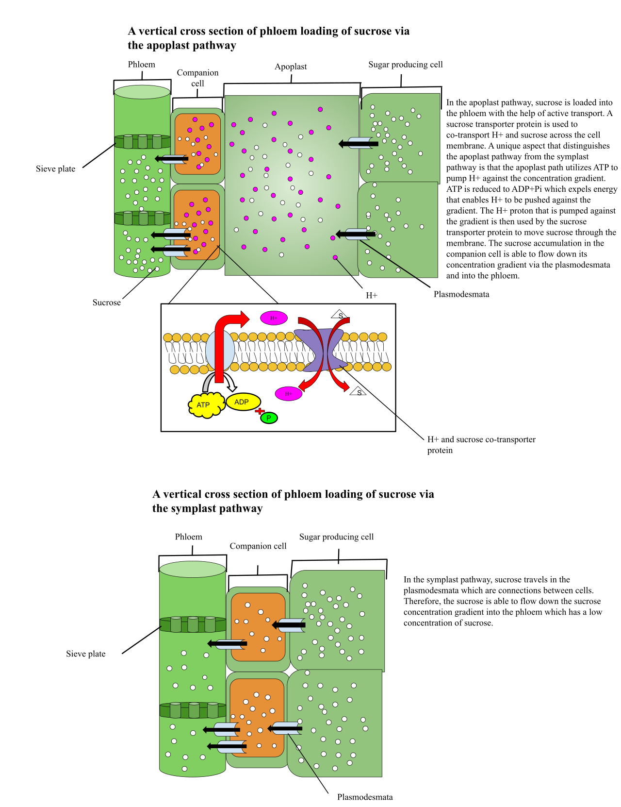
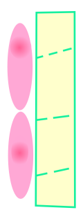
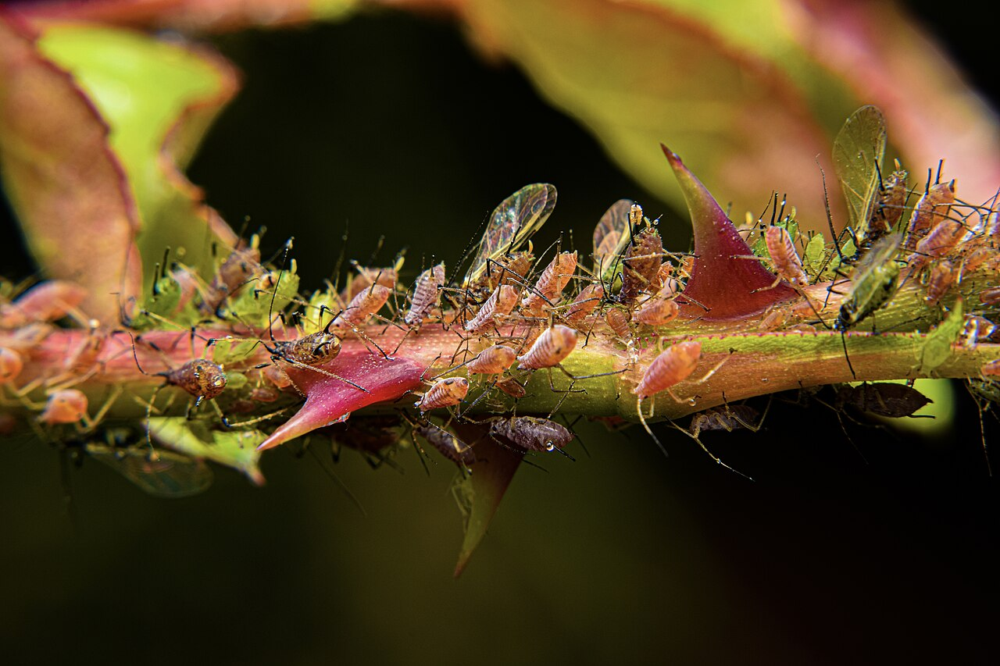

Unit 2: Translocation in Phloem
BOT-DSM-511 12 hours BSc 5th Semester
A note before you start. This whole unit was missing from your class notes, so this page teaches it from scratch. You do not need any prior notes to follow it: every term is defined where it first appears, every mechanism is built up step by step, and the short notes and long answers at the end are written so they can be revised on their own.
Read the page in order the first time — sap composition, then the girdling experiment, then the pressure flow model, then loading and unloading, then the evidence and objections. After that, use the search box and the checklist to revise topic by topic.
1. Composition of phloem sap
Definition. Phloem sap is the fluid transported in sieve tubes. It is an alkaline, sugar-rich solution whose dominant solute is sucrose, accompanied by amino acids, hormones, mineral ions and other organic molecules, moving from sources to sinks.
Phloem sap is not simply sugary water. Its composition tells us what the plant is moving, why it moves in that form, and how scientists were able to study it at all.
What is in phloem sap?
- Sucrose is dominant. Sucrose is the main transport sugar in most plants, typically present at a much higher concentration than any other sugar. It is non-reducing, chemically stable, and highly soluble, so large amounts can be carried without reacting with other cell contents along the way. Glucose and fructose are present only in small amounts.
- Amino acids and amides. Nitrogen travels mainly as amino acids (such as glutamate and aspartate) and amides (glutamine and asparagine). The total nitrogen content is nevertheless low compared with the sugar content — phloem sap is a carbon-rich, nitrogen-poor fluid. That is why sap-feeding insects must process huge volumes of sap to get enough nitrogen.
- Hormones and signalling molecules. Auxins, gibberellins, cytokinins and abscisic acid have all been found in phloem sap, together with small RNAs and proteins that act as long-distance signals, for example in flowering and stress responses.
- Mineral ions. Potassium is abundant; magnesium, phosphate and chloride are also present. Calcium, by contrast, is very low, because calcium is almost immobile in phloem and travels mainly in xylem.
- Other solutes. Small amounts of organic acids, vitamins, ATP and other metabolites occur, and the sap is alkaline, commonly around pH 8. This alkalinity contrasts with the acidic apoplast outside the sieve tubes and matters for loading, as explained in Section 4.
- Water. Water is the solvent and the bulk of the sap by volume. Its movement in and out of sieve tubes is what creates the pressure differences that drive mass flow.
Why sucrose, and why so little nitrogen?
Sucrose is ideal for transport: it carries a lot of chemical energy, it does not readily react with proteins (unlike reducing sugars such as glucose), and it can be made in the leaf and broken down again at the sink. The low nitrogen content is a consequence of the plant's economy — nitrogen is scarce and precious, so it is exported in controlled amounts as amino acids and amides rather than flooding the transport stream, and much of the nitrogen a leaf needs is retained or recycled locally.
How do we know? Evidence from aphid stylets
Phloem sap is under pressure inside sieve tubes, so cutting a stem makes sap spurt out, mix with xylem sap and cell contents, and seal itself off with callose. Early analyses were therefore unreliable. The clean method came from aphids. An aphid inserts its slender mouthpart, the stylet, through the tissue until it reaches a single sieve tube, and then feeds passively on sap pushed out by the sieve tube's own pressure. If the aphid is anaesthetised or removed so that the stylet stays in place, pure phloem sap continues to exude from the cut stylet and can be collected and analysed without contamination. Aphid-stylet exudate is the standard evidence for the composition described above, including sucrose dominance, low nitrogen, alkaline pH and the presence of hormones. A second method, cutting a stem and collecting exudate quickly before sealing, gives broadly similar results and confirms the stylet findings.

Remember: sucrose dominant, amino acids and amides present but nitrogen low, hormones and potassium present, calcium very low, sap alkaline (about pH 8), evidence from aphid stylets.

2. The girdling experiment
Definition. Girdling (ringing) is the removal of a complete ring of bark — including the phloem — from around a stem, leaving the inner xylem intact, to test whether organic food moves through the phloem.
Method
On a woody stem or tree trunk, a ring of bark about a few centimetres wide is carefully cut away down to the wood. The bark contains the phloem, which lies outside the vascular cambium; the xylem (wood) lies inside it and is left undamaged. Water and mineral transport in the xylem can therefore continue, while the phloem pathway across the ring is completely interrupted. A control plant is left ungirdled, and sometimes a second plant is girdled but with the ring left only partly cut, to check that the effect is due to the complete break.
Result
After days to weeks, three things are observed. First, the bark immediately above the ring swells, because sugars arriving from the leaves accumulate there and cannot pass down. Second, the roots and the stem below the ring are starved: root growth slows, stored food is used up, and in time the roots may die. Third, the leaves above the ring stay alive and healthy, because they still receive water and minerals through the intact xylem and continue to photosynthesise. If the ring is narrow, the bark may eventually grow back across it and transport resumes; if it is wide, the tree dies from root starvation.
Conclusion
Food manufactured in the leaves moves downwards through the phloem in the bark, not through the xylem. Cutting the phloem blocks that downward movement, while leaving the xylem intact leaves water transport unaffected. The experiment therefore identifies the phloem as the tissue of translocation.
Limitations
Girdling is a blunt experiment and must not be over-read. It proves that downward food movement needs the bark, but it does not by itself prove that sieve tubes (rather than other bark cells) carry the food, nor does it show how the food moves — by mass flow, diffusion or any other mechanism. It also damages living tissue, which can trigger wound responses such as callose deposition that seal sieve tubes, and it starves the roots, which changes the whole plant's physiology. Finally, it mainly demonstrates downward movement from leaves to roots; upward movement to buds and fruits is shown by other experiments, such as tracer studies. In an exam, state the conclusion precisely and then add the limitation — that earns marks that a bare conclusion does not.

3. Pressure flow model / mass flow hypothesis (Münch)
Definition. The pressure flow model, proposed by Ernst Münch in 1930, states that phloem sap moves by bulk (mass) flow along sieve tubes, driven by a turgor pressure gradient created by sugar loading at the source and sugar removal at the sink, with water following osmotically.
The key idea is that nothing in the sieve tube actively pushes individual sugar molecules along. Instead, loading sugar at one end and removing it at the other creates a pressure difference, and the whole solution — water and solutes together — flows down that pressure gradient, like water flowing through a pipe from high to low pressure. This is why it is called mass flow or bulk flow: everything moves together, in the same direction, at the same speed.
The three parts: source, sieve tube, sink
- Source. Any region that produces or releases more sugar than it uses: typically a mature photosynthesizing leaf, but also a storage organ (such as a tuber or bulb) when it is mobilising reserves. The source loads sucrose into the sieve tubes.
- Sieve tube. The transport pathway: a series of sieve tube elements joined end to end by sieve plates with pores, forming a continuous, low-resistance channel. Sieve tubes are living cells, but they have lost their nuclei and most organelles, leaving an almost empty tube ideal for bulk flow.
- Sink. Any region that consumes or stores sugar: growing roots, shoot tips, young leaves, developing fruits and seeds, and storage organs that are filling up. The sink unloads sucrose from the sieve tubes.
Note that source and sink are roles, not fixed organs. A leaf is a sink while it is young and growing, and becomes a source when mature. A potato tuber is a sink while it fills in summer and a source when it sprouts in spring.
How the pressure gradient is created, step by step
Energy (ATP) is spent only at the two ends, on loading and unloading. Movement along the tube itself is passive. That is one of the model's great strengths: it explains how sap can travel metres through a tree without ATP being spent along the whole path.
| Feature | Source | Sink |
|---|---|---|
| Role | Produces or releases sugar | Consumes or stores sugar |
| Examples | Mature leaf; sprouting tuber | Root tip, shoot tip, young leaf, fruit, seed, filling tuber |
| Sucrose movement | Loaded into sieve tubes (active) | Unloaded from sieve tubes (active and/or passive) |
| Sieve-tube solute concentration | High | Low |
| Water movement | Enters sieve tube by osmosis | Leaves sieve tube by osmosis |
| Turgor pressure | High | Low |
| Fixed or reversible? | Reversible: the same organ can be a source at one time and a sink at another | |
4. Phloem loading
Definition. Phloem loading is the active, energy-requiring transfer of sucrose (and other solutes) from mesophyll cells in a source leaf into the sieve tube–companion cell complex, against a concentration gradient.
Loading matters because sieve-tube sap is far more concentrated in sucrose than the surrounding leaf cells. Moving sucrose uphill, into an already concentrated tube, cannot happen by diffusion. It needs energy, and the companion cell supplies it.
The two routes into the phloem
Sucrose travels from the mesophyll cells where it is made to the sieve tube by one of two routes, and different plant species use them in different proportions.
Symplastic loading. Sucrose moves entirely through the living cytoplasm, from cell to cell through plasmodesmata (the cytoplasmic channels through cell walls), from mesophyll cells into companion cells and then into sieve tubes. No membrane crossing is needed until the final step, and in some plants the route is entirely passive, driven by diffusion down a concentration gradient maintained by converting sucrose into larger sugars (such as raffinose and stachyose) inside the companion cell — the polymer-trapping model. Because the larger sugars cannot diffuse back through the plasmodesmata, they are trapped in the phloem.
Apoplastic loading. Sucrose leaves the mesophyll cells into the apoplast — the cell-wall space outside the plasma membranes — and is then actively pumped from the apoplast into the companion cell and sieve tube across their membranes. This is the route used by many crop plants, and it is the route examiners most often ask about, because it is where active transport is clearest.
Sucrose–H+ cotransport: how apoplastic loading works
Apoplastic loading is driven by a proton gradient. The companion cell membrane contains H+-ATPase pumps that use ATP to pump protons (H+) out of the cell into the apoplast. This makes the apoplast acidic (low pH) and the inside of the cell relatively alkaline, and builds up both a chemical gradient and an electrical gradient for protons. A sucrose–H+ symporter (cotransporter) in the same membrane then lets protons flow back down their gradient into the cell — and carries one sucrose molecule in with each proton. The energy spent pumping protons out is thus used, indirectly, to drag sucrose in against its own gradient. This is secondary active transport: ATP is spent on the proton pump, not directly on sucrose, but sucrose movement still depends on ATP.
Roles of companion cells and plasmodesmata
Companion cells are the metabolic engines of the sieve tube. They retain nuclei, dense cytoplasm and many mitochondria, produce the ATP for the proton pumps, and carry the transport proteins in their membranes. Plasmodesmata connect companion cells to sieve tubes (and, in symplastic loaders, mesophyll cells to companion cells), allowing sugars, signals and even proteins to pass directly between cytoplasms. In apoplastic loaders, companion cells often have wall ingrowths (transfer cells) that increase membrane surface area for transport.
| Feature | Apoplastic loading | Symplastic loading |
|---|---|---|
| Path taken | Through the cell-wall space (apoplast), then across a membrane | Through cytoplasms connected by plasmodesmata |
| Membrane crossing | Yes — sucrose crosses the companion cell membrane | Minimal — sucrose stays inside cells until the sieve tube |
| Mechanism | Sucrose–H+ cotransport, powered by H+-ATPase | Diffusion through plasmodesmata, often with polymer trapping |
| Energy need | Directly ATP-dependent | May be largely passive; energy used to make larger sugars that trap solutes |
| Typical plants | Many herbaceous crops (for example, pea, bean) | Many trees and cucurbits (for example, Cucurbita) |

5. Phloem unloading
Definition. Phloem unloading is the removal of sucrose and other solutes from sieve tubes at a sink, followed by their use for growth and respiration or their conversion into storage compounds.
Unloading is the mirror image of loading, but it is more varied, because sinks differ. A growing root tip needs sucrose immediately for respiration and cell-wall building; a developing seed needs it converted to starch or protein for storage; a fruit needs it for sweetness and growth. The unloading route matches the sink's job.
Symplastic unloading
In growing sinks such as root tips and young leaves, sucrose moves out of the sieve tube through plasmodesmata directly into the cytoplasm of sink cells, following a concentration gradient kept steep by the sink's rapid consumption of sucrose. This route needs little or no extra energy at the unloading step itself, because the sink is constantly using the sucrose up.
Apoplastic unloading
In storage sinks such as developing seeds, tubers and fruits, sucrose is released from the sieve tube–companion cell complex into the apoplast, and is then taken up by sink cells across their membranes, often by sucrose–H+ transporters or after being broken down in the apoplast into glucose and fructose by cell-wall invertase, which are then taken up separately. Apoplastic unloading allows the sink to control uptake independently of the phloem, and it is essential where there is no direct plasmodesmatal connection — for example, between maternal tissue and the developing embryo in a seed, where the two generations of the plant are symplastically isolated from each other.
Energy needs
Unloading is not always passive. Where sucrose is pumped across a membrane, or where it is actively accumulated in storage cells, ATP is spent — on proton pumps and transporters, and on converting sucrose into starch, protein or other storage products. Where unloading is symplastic into a rapidly consuming sink, the energy cost is mainly the energy of consuming the sucrose itself (respiration and biosynthesis). As a rule for exams: loading is always active; unloading may be passive or active depending on the sink, and storage sinks cost more energy than growing sinks.

6. Supporting evidence and objections to the pressure flow model
Definition. Evidence for the pressure flow model is any observation predicted by bulk flow down a pressure gradient; an objection is an observation the simple model struggles to explain, which is why the model is accepted in modified form rather than exactly as Münch first stated it.
Supporting evidence
- Münch's physical model. Two sucrose solutions of different concentrations connected by a tube, separated from water by semi-permeable membranes, produce flow from the concentrated side to the dilute side without any pump — showing that osmotic pressure differences alone can drive bulk flow.
- Aphid stylet exudation. Sap flows out of a cut aphid stylet under its own pressure, and the flow rate and pressure are higher at source ends than at sink ends, as the model predicts.
- Radioactive tracers. Leaves fed with 14CO2 export labelled sucrose that moves along sieve tubes at speeds (roughly 0.5–1.5 metres per hour) far too fast for diffusion, and in the direction from source to sink. All solutes in the sap move at the same speed, as bulk flow predicts, rather than each diffusing at its own rate.
- Pressure measurements. Direct measurements with pressure probes show higher turgor pressure in source sieve tubes than in sink sieve tubes.
- Girdling and source–sink manipulation. Removing a sink (for example, removing fruits) slows export from the source leaf; removing a source starves its sinks. Flow follows source–sink relationships, not a fixed direction.
- Metabolic inhibitors. Blocking ATP production in a source leaf stops loading and stops export, while the sieve tube pathway itself needs no ATP along its length — matching the model's claim that energy is spent at the ends, not en route.
Objections and limitations
- Bidirectional flow in a single sieve tube. The simple model predicts one pressure gradient and one direction per tube, yet different substances sometimes move in opposite directions at the same time in the same stem. This is explained if neighbouring sieve tubes carry flow in opposite directions, but true bidirectional flow in one tube remains difficult for the simple model.
- Sieve plates as resistance. Sieve plates with narrow pores should offer considerable resistance to bulk flow, and some calculations suggest the pressure gradients needed would be larger than those measured. The plant partly solves this with wide pores and callose regulation, but the quantitative fit is not perfect.
- Simultaneous movement to many sinks. A single source supplies many sinks at different distances and rates, and flow can be redirected quickly when a sink is removed. The simple gradient model does not fully explain this fine control, which involves unloading regulation at each sink.
- Role of the companion cell and active processes along the path. Sieve tubes are not inert pipes: companion cells along the path can load and unload solutes en route, and sieve tube contents change along the journey, which the simplest version of the model ignores.
- Speed and pressure discrepancies. In some tall trees, measured pressure differences appear smaller than the model would require for the observed flow rates, suggesting additional mechanisms or refinements are involved.
Exam conclusion. The pressure flow model remains the accepted explanation of translocation, because it explains the direction, speed, simultaneous movement of solutes, and source–sink behaviour of phloem transport better than any alternative. It is best stated in its modern, modified form: bulk flow driven by osmotically generated pressure gradients, with active loading and unloading at the ends, regulated unloading at sinks, and companion cells maintaining the sieve tubes along the way.

Exam traps
- Phloem loading is active sucrose transport, not root pressure. Root pressure pushes water up the xylem; it has nothing to do with loading sucrose into phloem. Loading is driven by ATP through H+-ATPase pumps and sucrose–H+ cotransport in companion cells.
- Sieve tubes are living but lack nuclei. Do not call them dead (like xylem vessels) and do not give them a nucleus. At maturity they lose the nucleus, vacuole membrane and most organelles, and they stay alive only because the companion cell supports them through plasmodesmata.
- Mass flow is bulk flow driven by pressure, not diffusion. Diffusion is slow, molecule by molecule, and cannot explain speeds of a metre per hour over metres of stem. In mass flow the whole solution moves together, at one speed, down a turgor pressure gradient.
- Bonus trap: source and sink are roles, not organs. A tuber can be a sink in summer and a source in spring; a young leaf is a sink and a mature leaf is a source.
Short notes (5-mark answers)
Each answer below is written to be complete at 5-mark length: a definition, the essential points, and a closing line. Learn the bolded points first, then the explanation around them.
Short note 1: Components of phloem sap
Phloem sap is the fluid in sieve tubes. Its dominant solute is sucrose, the main transport sugar, chosen because it is non-reducing, stable and highly soluble. It also contains amino acids and amides (glutamate, aspartate, glutamine, asparagine) as the main nitrogen carriers, but total nitrogen is low — the sap is carbon-rich and nitrogen-poor. Hormones (auxin, gibberellin, cytokinin, abscisic acid) and signalling molecules travel in it, as do mineral ions, especially potassium, magnesium, phosphate and chloride, while calcium is very low because it is phloem-immobile. The sap is alkaline, about pH 8, and water is its bulk solvent. Its composition is known chiefly from aphid stylet exudate: an aphid's stylet taps a single sieve tube and pure sap exudes under pressure, avoiding contamination from cut cells.
Short note 2: Girdling experiment
Girdling is the removal of a complete ring of bark, including the phloem, from a stem, leaving the xylem intact. After girdling, the bark above the ring swells as sugars from the leaves accumulate, while the stem and roots below the ring are starved and root growth stops; the leaves above stay healthy because water still rises through the intact xylem. The conclusion is that food manufactured in leaves moves downwards through the phloem, not the xylem. The limitation is that girdling proves the pathway is in the bark, but not that sieve tubes alone carry the food, nor the mechanism of movement, and wound responses such as callose sealing complicate the result.
Short note 3: Phloem loading
Phloem loading is the active transfer of sucrose from mesophyll cells into the sieve tube–companion cell complex against a concentration gradient. In symplastic loading, sucrose moves through plasmodesmata from cell to cell, often trapped by conversion to larger sugars (polymer trapping). In apoplastic loading, sucrose enters the cell-wall space and is pumped into the companion cell by sucrose–H+ cotransport: H+-ATPase uses ATP to pump protons out, creating a proton gradient, and a symporter lets protons flow back in, carrying sucrose with them. Companion cells supply the ATP and the transport proteins, and plasmodesmata link them to the sieve tubes. Loading is what builds the high source pressure that drives mass flow.
Long answers (10-mark answers)
Long answer 1: The pressure flow model, with evidence
Structure. (1) Introduction and proposer — Münch, 1930. (2) The three components: source, sieve tube, sink. (3) Step-by-step mechanism: loading, water entry, bulk flow, unloading, water exit. (4) Evidence for the model. (5) Objections and limitations. (6) Conclusion: the model in its modified form.
Model answer. The pressure flow (mass flow) hypothesis, proposed by Ernst Münch in 1930, states that phloem sap moves by bulk flow along sieve tubes down a turgor pressure gradient. The source (mature leaf) actively loads sucrose into the sieve tube, raising its solute concentration; water enters by osmosis and turgor pressure rises. At the sink (root, fruit, seed), sucrose is unloaded, solute concentration falls, water leaves, and pressure stays low. Sap therefore flows in bulk from source to sink, with all solutes moving together at the same speed. Energy is spent only on loading and unloading; flow along the tube is passive. Evidence: Münch's physical model reproduces the flow without a pump; aphid stylets exude sap under pressure, higher at sources than sinks; 14C tracers move at 0.5–1.5 m per hour, too fast for diffusion, with all solutes at one speed; pressure probes confirm the source–sink gradient; and blocking ATP in the source stops export. Objections: sieve plates should resist flow more than observed; bidirectional movement is hard to explain in a single tube; and measured gradients in tall trees sometimes seem too small. Conclusion: despite these quantitative difficulties, the model in its modern modified form — with regulated unloading and companion-cell support along the path — remains the accepted explanation of translocation.
Marking points. Münch and date; source/sink/sieve tube defined; loading raises pressure, unloading lowers it; water by osmosis at both ends; bulk flow, not diffusion; at least three pieces of evidence; at least two objections; modified-form conclusion.
Diagram cue. Draw the source-to-sink pressure-flow diagram (Section 3): source box labelled high pressure, sieve tube arrow, sink box labelled low pressure, water in at the source and water out at the sink.
Long answer 2: Source-to-sink transport mechanism
Structure. (1) Define source, sink and translocation. (2) Composition of what is transported. (3) Loading at the source — apoplastic and symplastic routes, sucrose–H+ cotransport. (4) Transport along the sieve tube — pressure flow. (5) Unloading at the sink — symplastic in growing sinks, apoplastic in storage sinks, energy needs. (6) Evidence that the pathway is the phloem (girdling, tracers) and a closing summary.
Model answer. Translocation is the movement of organic food from sources to sinks through the phloem. The material moved is mainly sucrose, with amino acids, hormones and potassium, in alkaline sap. In a mature source leaf, sucrose made in mesophyll cells is loaded into the sieve tube–companion cell complex: symplastically through plasmodesmata, or apoplastically via the cell-wall space followed by active sucrose–H+ cotransport, powered by H+-ATPase in the companion cell membrane. Loading raises sieve-tube solute concentration, water enters by osmosis, and pressure rises at the source. The sap then moves by pressure-driven bulk flow along sieve tubes — living, enucleate elements joined by sieve plates — towards the sink, where pressure is kept low by unloading. Growing sinks unload symplastically through plasmodesmata into rapidly consuming cells; storage sinks unload apoplastically, often after invertase breaks sucrose into glucose and fructose, and then accumulate starch, protein or oil. Water leaves the sieve tube at the sink and returns to the xylem. That the phloem is the pathway is shown by the girdling experiment (food accumulates above a bark ring, roots starve below it) and by 14C tracer studies showing labelled sucrose moving from leaf to sink in sieve tubes. Source and sink are roles, not fixed organs: a leaf changes from sink to source as it matures, and a tuber changes from sink to source when it sprouts.
Marking points. Source and sink defined as roles; sucrose as main solute; both loading routes with sucrose–H+ cotransport; pressure flow as the transport step; both unloading routes matched to sink type; energy spent at ends, not en route; girdling or tracer evidence; role-reversal example.
Diagram cue. Draw the loading/unloading diagram (Section 5) alongside the pressure-flow diagram (Section 3), labelling the companion cell, plasmodesmata, sucrose–H+ symporter and the two unloading routes.
Study checklist
Your ticks are saved on this device, so you can close the page and pick up where you left off.